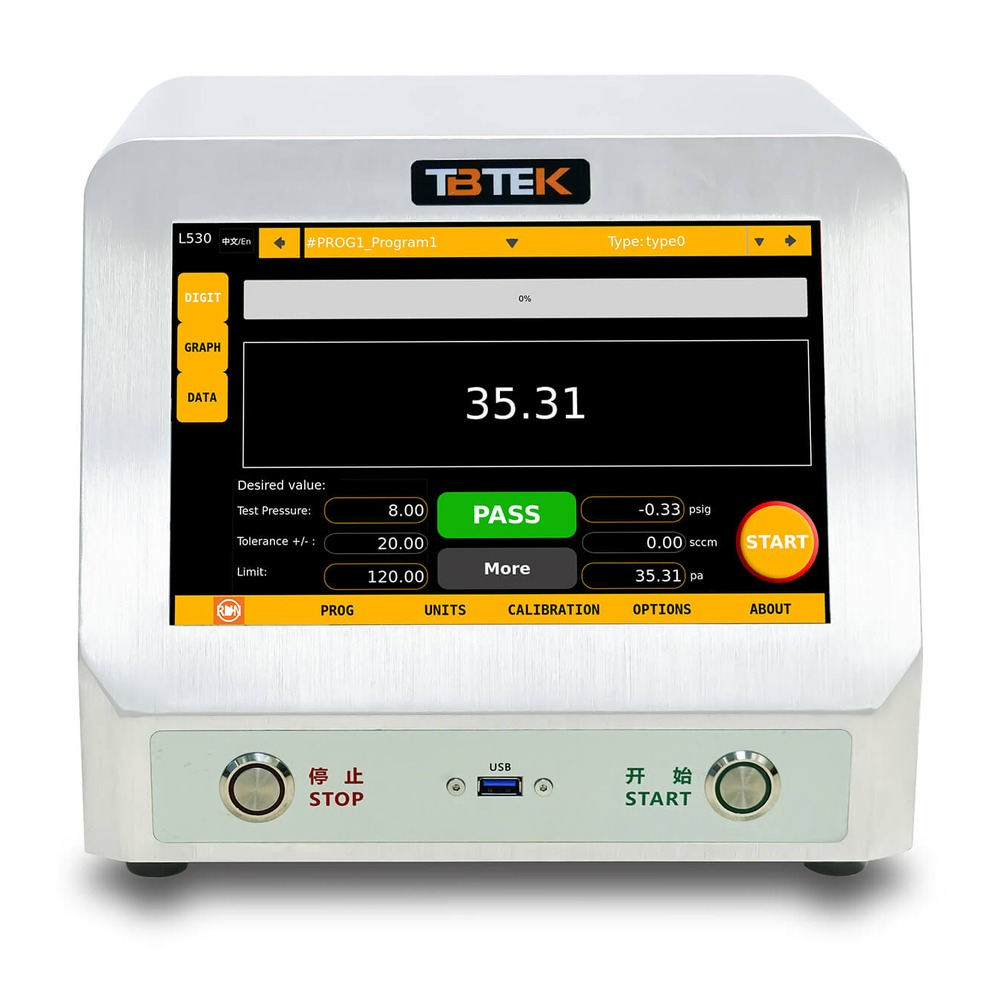
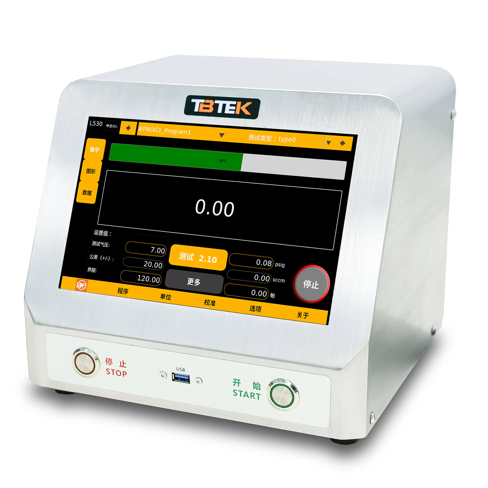

推荐型号
可对比的相关型号
可按手动或电子调压对比相近的差压型号。
单通道差压型气密测试仪，手动调压；集成高精度单晶硅差压传感器，差压分辨率 0.1 Pa。


与 L530 共用同一平台，采用手动调压；集成高精度单晶硅差压传感器、10 英寸高清电容触摸屏及 304 不锈钢机身。
面向电子、汽车、医疗、医药等行业的气密测试场景，支持内部数据存储与输出。
| 型号 | L520 |
|---|---|
| 测试方法 | 差压，单通道 |
| 调压方式 | 手动调压（与 L530 电子调压版的主要区别） |
| 气压范围 | 0–100 kPa / 0–350 kPa / 0–700 kPa |
| 精度 | 0.25% FS |
| 差压传感器 | 单晶硅，±6 kPa |
| 最小分辨率 | 0.1 Pa |
| 长期稳定性 | 0.05% F.S / 年 |
| 最大耐压 | 40 MPa |
| 测试口 | 1/4" BSPP (G) 内螺纹，标配快速接头 |
| 连接接口 | USB Type-A（数据导出 / 固件升级）、I/O 接口、以太网 10/100M（TCP/IP）、PLC PNP/NPN |
| 显示屏 | 10 英寸超清晰电容触摸屏，1280×800，多点触控，多语言系统 |
| 存储程序 | 100 组（可升级至不限数量） |
| 时间设置 | 0.1 – 9999.9 秒 |
| 测试过程 | 充气 → 稳压 → 隔离 → 测试 → 排气 |
| 数据 / 固件 | 内部数据存储与输出；固件支持远程协助 / USB 升级 |
| 电源 | 24 VDC，60 W（内置专用充电口） |
| 机身 | 304 不锈钢外壳；27.8 × 24.4 × 26.6 cm |
手动设定测试压力，配置更直接；需要自动调压与配方切换时可对比 L530 电子调压版。
单晶硅差压传感器，分辨率达 0.1 Pa，精度 0.25% FS，满足微泄漏场景需求。
大流量气控阀设计，充气效率提升 300%；304 不锈钢外壳易清洁，40 MPa 耐压传感器适应严苛工况。
10 英寸多点触控屏、多语言系统、100 组程序；USB、以太网与 PLC PNP/NPN 便于数据交互与产线集成。
规格书列明的应用领域涵盖汽车、家电、医疗医药、电气组件与工业品。
汽车零部件与管路的气密性检测，支持产线重复判定。
家电产品密封部件的气密测试与出厂质检。
医疗器械、医药包装等高洁净要求场景的微泄漏检测。
电气组件、工业品及航空领域零部件的气密测试（英文规格书列有航空行业）。
可按手动或电子调压对比相近的差压型号。